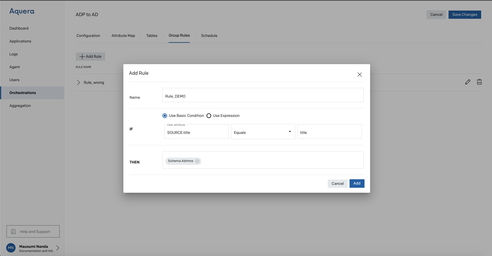
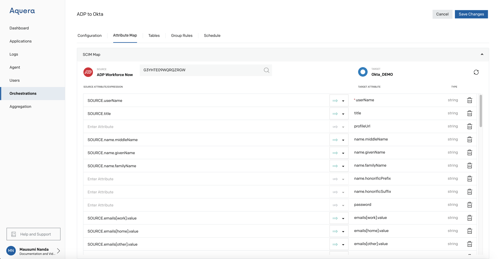
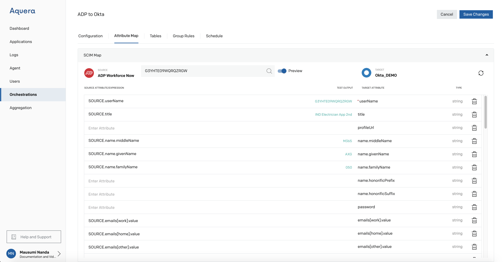
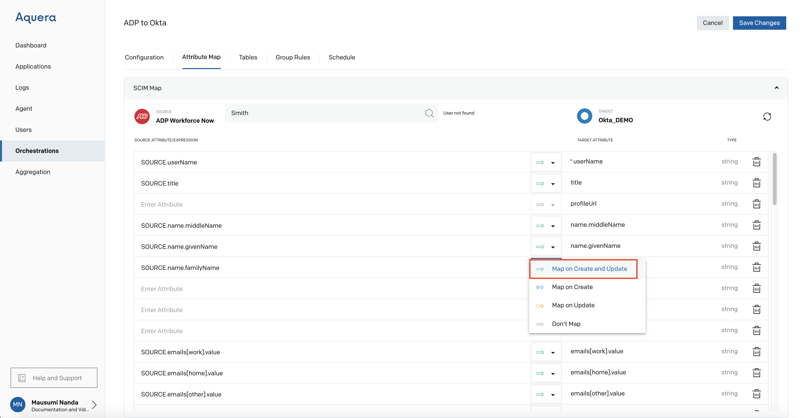
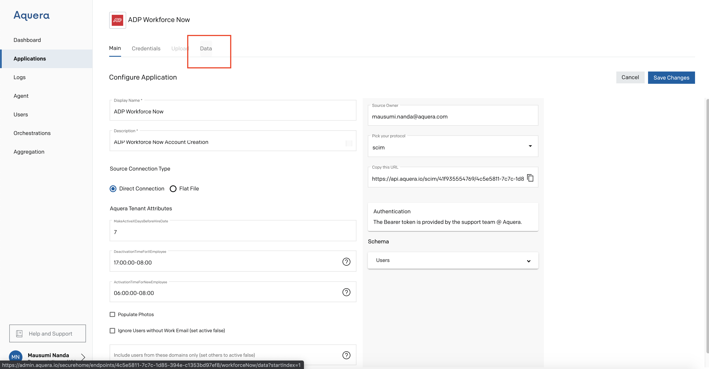
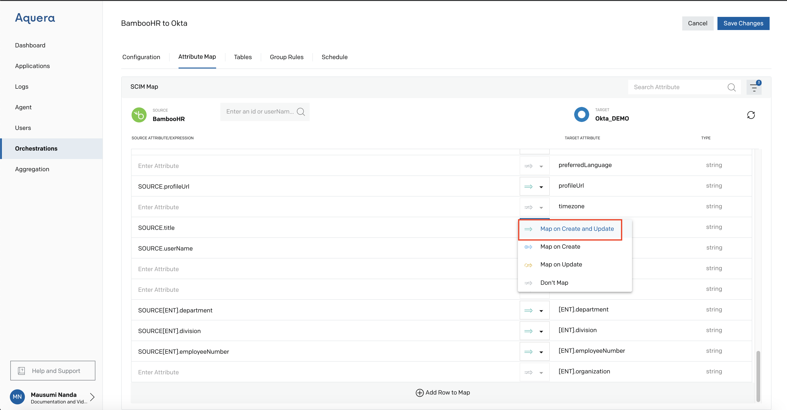

Reusable Parts of Orchestration-Managing Groups, Attribute Maps, Use of Tables
This guide consists of the following sections
1. Group Management
a. Use Basic Condition
b. Use Expressions
2. Attribute Maps
a. Attribute Mapping
3. Use of Tables
Group Management
Use Basic Condition
When the user checked the Enable Group Management checkbox in the Configuration section, Group Rules can be formed for the group being created.
Users can define their own rules for the groups with regard to updating the data.
If Group Management is enabled and no Rules are defined, then groups will only be mapped if a mapping is created to DEST.groups.

Use Expression
if the group expression is undefined then the group list will not be modified during the PUT or POST.
If you would like to remove a user from all of their groups then the expression must evaluate to the empty list [].
The managed group list provides a list of groups that the Orchestration will manage.
Only these groups will be modified by the orchestration.
This allows the target to have groups that are managed in the target, for example, Active Directory security groups managed by Active Directory and groups managed by the orchestration.
The list of groups will be the displayName of each group.
The groupDisplays must be unique in the target directory.
If the group name is redundant in the target then that group cannot be managed as the orchestration will not know which group of the two to add the user.

Attribute Maps
Attribute mapping is done between source and target. The mapping simplifies the process of executing the CRUD operations on the attributes, as the changes made to the source attribute will automatically get reflected at the target once the mapping is completed and the changes are saved.
Attribute Mapping
Please enter an userID to Preview their mappings

Enter a valid userID from the ADP Application (Data Section), for example G3YHTE09WQRQZRGW

Then Click Search
You get a Preview Button
Please turn it On

Mappings Preview is shown

Choose the Attribute that is mapped

Click on the dropdown next to the Arrow mark

You get the following dropdown

Select the first dropdown (Map on Create and Update)
Then Click Save Changes
The ADP to Okta Attribute mapping is Successful

Steps to pull the Data from the ADP Application
Goto ADP Application that you created prior to the Orchestration

Goto the Data Tab

Copy the Field for userID (marked as True)

Use of Tables
Tables provide a mechanism to store name-value pairs in the Orchestration. These tables can be used to convert attributes from the source application to the target application. These lookup tables can be used to translate the format of state information.

Then Add Row

Click on Add the Table

Goto Attribute Map

Map on Create and Update

Click on Save Changes
Then search a valid UserID from BambooHR

Check the 'Preview' on to see the search results.